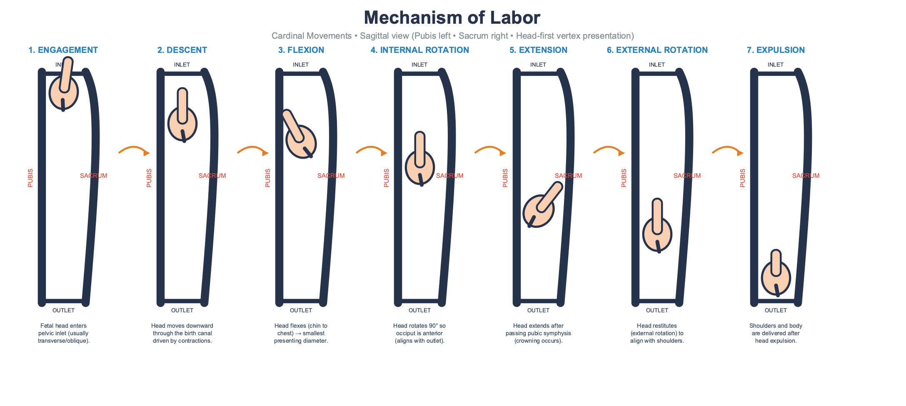
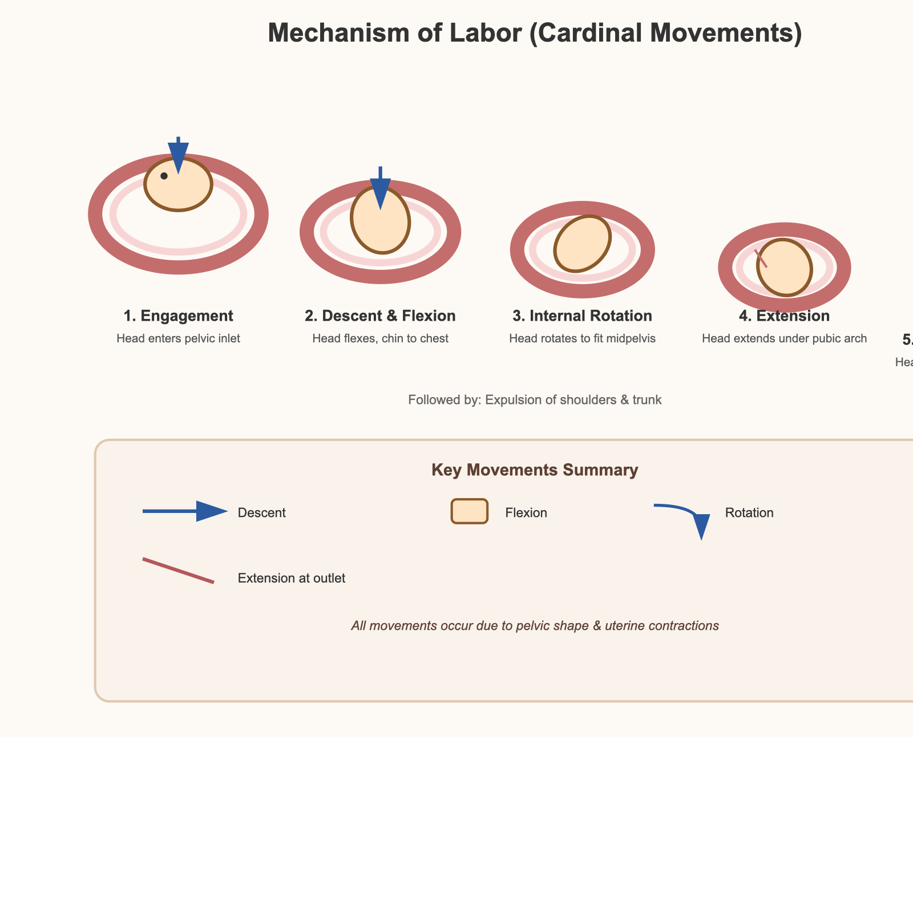
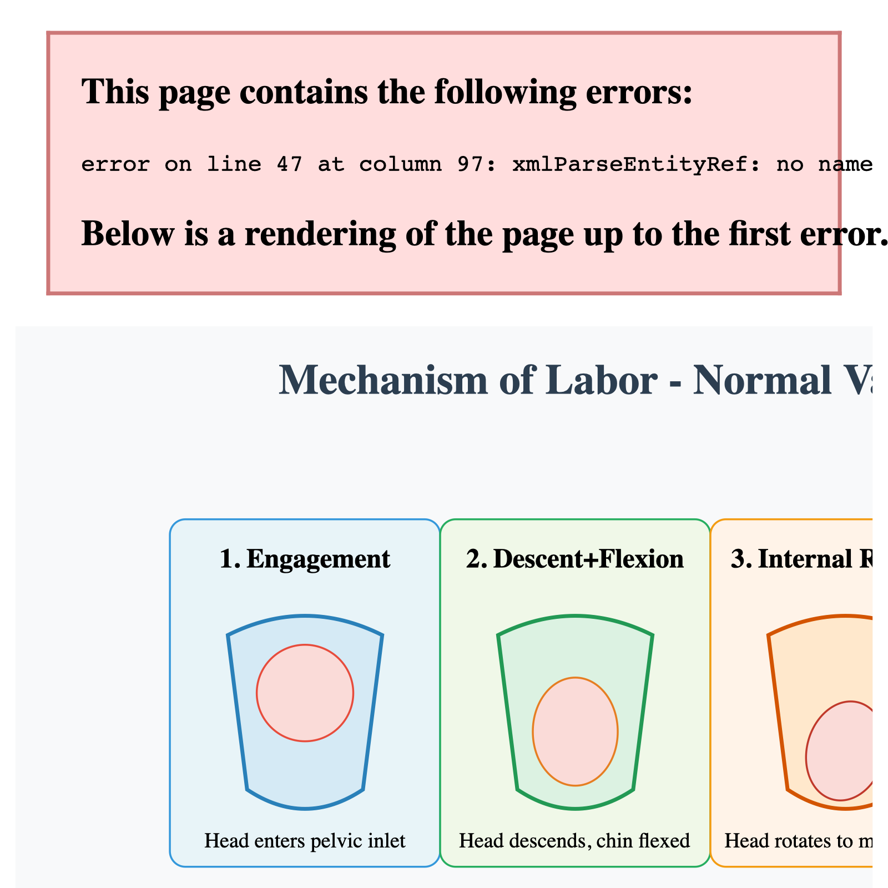
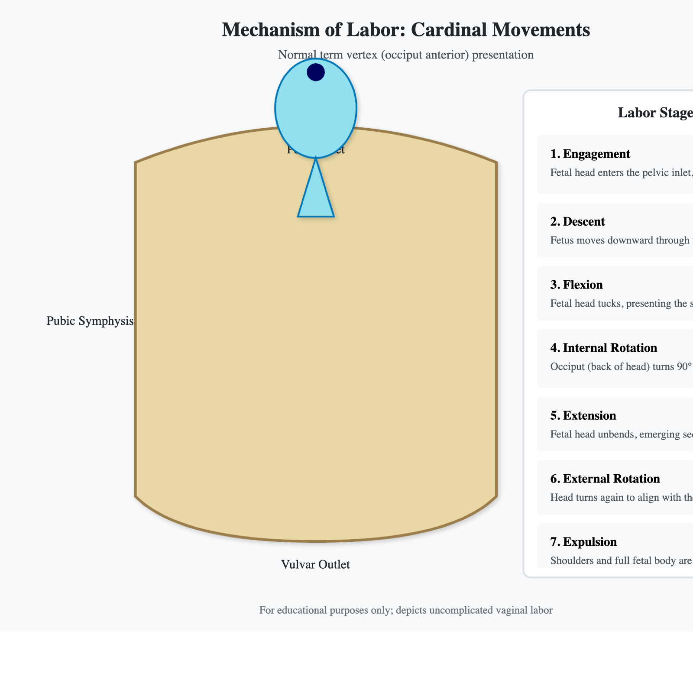

§ 02 — 输出画廊
各模型输出对比
点击图片可全屏查看 · 橙色 = Chat 版 · 青色 = API 版
1
GLM 5.1 Thinking / z-ai
全批次内旋转+外旋转视觉表达最佳 · 唯一含 FROM ABOVE 俯视图
Chat 28/35
API 26/35
● Chat 版 28/35

● API 版 26/35

C1C2C3C4C5C6C7
Chat5344444
API5343344
Chat 版 8 个面板，将 Restitution 与 External Rotation 分开单独呈现，并在内旋转面板加入 FROM ABOVE 俯视插图——全批次唯一。大量青绿色箭头标注运动方向（C6=4）。Chat 版 C7=4，总分 28/35 全批最高。API 版 C4/C5 降为 3，C2=3，总分 26/35。两版均正确处理了内/外旋转视觉表达，唯一引入俯视图的模型。
2
Gemini 3 Pro / Google
Chat-API 差距 8 分 · Chat版输出纯文字时间轴，无解剖图形
Chat 15/35
API 23/35
● Chat 版 15/35

● API 版 23/35

C1C2C3C4C5C6C7
Chat5111124
API5233244
Chat-API 差 8 分，全批次最大
Chat 版是纯文字时间轴信息图（C1=5 步骤命名完整，但 C2=C3=C4=C5=1，无任何解剖图形）。API 版完全不同：蓝色胎头在粉色骨盆内移动，每步黄色箭头（C6=4），C4=3 有弯箭头表达内旋转。同一个模型，两套截然不同的「输出风格偏好」。
3
Claude 4.7 Opus / Anthropic
Chat SVG 全批次最大（40,993 字节）· API版优于 Chat 版 4 分
Chat 18/35
API 22/35
● Chat 版 18/35

● API 版 22/35

C1C2C3C4C5C6C7
Chat4232214
API4233334
C6=1 运动方向（Chat）
Chat 版 SVG 代码 40,993 字节，全批次最大，约为 API 版（6,559 字节）的 6.3 倍。结果运动方向箭头几乎没有（C6=1，全批次最低）。API 版 C4/C5/C6 均为 3，用更少代码做出了更有信息量的图。两版整体清晰度相当（C7=4）。
4
Kimi K2.6 Thinking / Moonshot AI
原始版本双版渲染失败 · 修复后 Chat 版得分 23/35
原始 7/35
修复 23/35
● Chat 修复版 23/35

修复：移除首行 <<svg 双尖括号。6格覆盖全部7步，红色箭头，C4=3，C5=3，C6=4，总分 23/35
● API 修复版 16/35

仅含 Step 1（衔接）单帧；但解剖标注最精确：LOA、坐骨棘、耻骨联合、0站位（C2=3, C3=4）
C1C2C3C4C5C6C7
Chat4243343
API1341124
技术失败，非能力失败
原始 Chat 版（
<<svg 双尖括号）和原始 API 版（CSS class 定义在 HTML context 外）均渲染失败，双双得 7/35。修复后两版画像截然不同——Chat 版 C4=C5=C6=4，旋转表达出色；API 修复版 只有第 1 步（衔接）的单帧，但那一帧解剖标注是全批次最详细之一（C2=3，C3=4），可见模型的医学理解并不差。
5
ChatGPT 5.5 Thinking / OpenAI
截图截断最严重 · 完整渲染后 Chat 25/35，API 26/35
Chat 25/35
API 26/35
● Chat 版 25/35

● API 版 26/35

C1C2C3C4C5C6C7
Chat5243344
API4344434
完整渲染大幅提升
原始截图裁掉了整整两列：Chat SVG（1200px）被截成 870px，API SVG（1200px）被截成 940px。完整渲染后 Chat 从 11/25*→25/35，API 从 21→26/35。Chat 版 C1=5 覆盖 8 步全部，API 版 C4/C5=4 内外旋转表达出色。
6
MiniMax MAX / MiniMax
Chat版带进度条和眼睛的胎头 · API版用落球序列代表下降
Chat 21/35
API 16/35
● Chat 版 21/35

● API 版 16/35

C1C2C3C4C5C6C7
Chat5223333
API4122223
Chat 版有「Labor Progress」进度条，C1=5 步骤命名完整，C4/C5 均为 3，有红色弧形箭头；胎头画成带眼睛嘴巴的粉色椭圆（C2=2，C3=2）。API 版是抽象落球序列：C2=1（全批次最低之一），运动标注（C6=2）和旋转表达（C4/C5=2）均弱于 Chat 版。Chat 版整体比 API 版高 5 分，方向与多数模型相反。
7
Grok / xAI
完整渲染后 Chat 22/35 · API 21/35
Chat 22/35
API 21/35
● Chat 版 22/35

● API 版 21/35

C1C2C3C4C5C6C7
Chat5342224
API4233234
完整渲染后分数提升
原始截图右侧截断（Chat 1450px viewBox 被截），导致后续步骤不可见，C5 均为 1。完整渲染后两版均可见外旋转步骤，Chat C1=5 步骤最完整，API C4=3 内旋转有所改善。骨盆形态过于简化（C2=2/3），内旋转仍缺乏旋转箭头（C4=2），但整体清晰度 C7=4 均较好。
8
Doubao / 字节跳动
Chat版含 XML 解析错误，部分渲染 · API版胎体为蓝色三角形
Chat 10/35
API 13/35
● Chat 版（部分渲染） 10/35

● API 版 13/35

C1C2C3C4C5C6C7
Chat2121112
API3221113
XML 错误（Chat）
Chat 版 SVG 含 XML 解析错误，浏览器渲染至第一个错误即停止，仅显示前 3 步（C1=2）。API 版步骤以文字列表形式呈现在右侧（C1=3），中央标注了 Pubic Symphysis / Pelvic Inlet / Vulvar Outlet，但「胎体」是一个蓝色三角形（C3=2），C4/C5/C6 均为 1，完全没有动态表达。两版整体清晰度也在全批次垫底。
?
Manus 1.6 MAX / Manus AI · AI Agent
未纳入评分 · 输出为 SVG 源码截图，未渲染为医学图示
未评分
● Manus 输出（SVG 源码截图）

Manus 是 AI Agent，不是纯 LLM。本次测试中，Manus 输出了 SVG 源码文本而未进行渲染——对「描述 SVG 代码」与「生成可渲染 SVG 图示」的理解存在偏差。作为 Agent 基准，需要专门的测试设计。